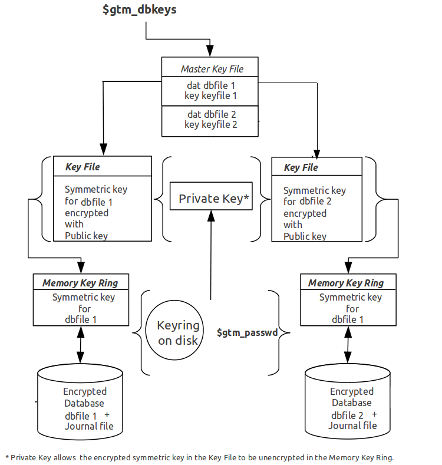

This section describes the operation of GT.M database encryption with the reference implementation. A subsequent section describes the functions of the reference implementation which can be reworked or rewritten to use different encryption packages.
|
Terms |
Description |
|---|---|
|
Cipher |
An encryption algorithm or the implementation of an encryption algorithm, for example, the symmetric cipher AES 256 CFB. |
|
Hash (or Fingerprint) |
A signature algorithmically derived from an object which is certain to a very impressive probability that uniquely identifies an object within a set of similar objects. |
|
Key length |
The number of bits comprising a key. Longer key lengths may result in stronger encryption (more difficult to break) but require more computation. |
|
Key management |
The generation, distribution, and access of keys. The reference implementation of database encryption uses:
|
|
Master key file |
This file contains pairs of entries indicating which symmetric key is used to encrypt/decrypt database records. Database records can be found in database, journal, extract and backup files. |
|
Obfuscation |
A technique used to make data difficult to discern on casual observation. A common example is "pig Latin". Since the password used for the GPG keyring exists in the process' environment with the reference implementation, GT.M obfuscates it to reduce the chance that visual access to process information (say during debugging) inadvertently exposes the password. |
|
Password (or Passphrase) |
A secret word or phrase used in the reference implementation to protect a private key on disk (a password should never be on disk in the clear, which is the electronic equivalent of taping it to your monitor with a sticky note). |
|
Public key / Private key (or Asymmetric keys) |
A pair of keys used so what one key encrypts the other can decrypt. The private key is sometimes referred to as the "secret" key (because it is not shared as opposed to the public key which is; the private key should never be on disk in the clear). In the reference implementation, asymmetric keys are used to encrypt the symmetric database key. This allows a master to encrypt a symmetric database key with a user's public key (so only the user can decrypt it with their private key). Encryption using a public key / private key pair is referred to as "public key encryption". The reference implementation uses GNU Privacy Guard with associated libraries libgpgme and libgpg-error for asymmetric key encryption. |
|
Symmetric key |
The same key used to both encrypt and decrypt. Symmetric ciphers are faster than asymmetric ciphers. Encryption using a symmetric key is referred to as "symmetric key encryption". Depending on the platform, the reference implementation uses either GNU Privacy Guard's libgcrypt, or libcrypto from OpenSSL, for symmetric key encryption. |
GT.M implements database encryption with a plug-in architecture that allows for your choice of cipher. Any code statically or dynamically linked in to a GT.M process must meet the requirements of code used for external calls. The GT.M distribution includes a source reference implementation that interfaces to several common packages and libraries. You are free to use the reference implementations as is, but remember that the choice of cipher and package is yours, and FIS neither recommends nor supports any specific package.
![[Note]](images/note.jpg) |
Note |
|---|---|
In any given instance, you must use the same encryption libraries for all databases accessed by the processes of an application instance, but each database file can have its own key. Of course, all processes accessing a database or journal file must use the same encryption algorithm and key. |
A GT.M database file contains several parts:
A file header containing information pertaining to the database file itself.
Global and local bit maps, which together specify which blocks in the file are in use and which blocks are free.
Data blocks containing the actual data, as well as index blocks containing structural information providing paths to the actual data (there is a directory tree, and one or more global variable trees). Each data or index block consists of a block header, and one or more data records.
In an encrypted database, GT.M encrypts only the index and data records in a database. The file header, bit maps, and block headers are not encrypted, i.e., information relating to database structure is not encrypted. This means some system administration operations such as turning journaling on and off, do not require the encryption key for a database file. Others, such as MUPIP EXTRACT, do.
Journal files contain data records, such as before image records, update records, and after image records, as well as structural information such as transaction markers, process records, etc. Again, only records that contain data - before image records, update records and after image records - are encrypted. Records that contain structural information remain in cleartext.
Records subject to encryption are collectively referred to in the document as data records.
For performance, a symmetric cipher is used to encrypt and decrypt data records. Asymmetric ciphers are used by the reference implementation to secure the symmetric cipher keys stored on disk. A password is used to secure the private key which is stored on a key ring on disk. The following illustration is an overview of GT.M database encryption in the reference implementation using GNU Privacy Guard (GPG) to provide the ciphers.

A passphrase protects the key ring on disk that contains the private key uses to encrypt the asymmetric database keys. GT.M requires this passphrase either in an obfuscated form as the value of the gtm_passwd environment variable, or,if gtm_passwd is set to "" and then typed at the GTMCRYPT passphrase prompt. GT.M obfuscates the passphrase to prevent inadvertent disclosure, for example, in a dump of the environment that you may submit to FIS for product support purposes, the passphrase in the environment is obfuscated using information available to processes on the system on which the process is running, but not available on other systems.
You can provide the passphrase of the key ring to GT.M in one of the following four ways:
-
Set the gtm_passwd environment variable to an obfusacted form of the passphrase of the keyring using the maskpass utility but do not define $gtm_obfusaction_key. For example:
echo -n "Enter keyring passphrase: " ; export gtm_passwd=`$gtm_dist/plugin/gtmcrypt/maskpass|cut -f 3 -d " "`
You should use this method when you need to restrict the access of encrypted regions to the same $USER using the same GT.M distribution. $gtm_passwd can be passed between from the parent process to a child process with the Job command. Note that $gtm_passwd is the only way for a child process to receive a password from a parent process.
Set the environment variable gtm_passwd to "". In this case, GT.M uses the default GTMCRYPT passphrase prompt to obtain a password at process startup and uses that value as $gtm_passwd for the duration of the process. Note that you cannot change the GTMCRYPT passphrase prompt without customizing the reference implementation plugin.
-
When the environment variable gtm_passwd is not set, create a one line GT.M program as in the following example:
echo 'zcmd ZSYstem $ZCMdline Quit' > zcmd.m
and use it invoke the MUPIP or DSE command. For example:
$ gtm_passwd="" mumps -run zcmd mupip backup \"*\"
The empty string value of $gtm_passwd causes the MUMPS process to prompt for and set an obfuscated password in its environment which it then passes to the MUPIP program. Shell quote processing requires the use of escapes to pass the quotes from the ZSYstem command to the shell.
Note An obfuscated password in the environment is the only way that other GT.M processes (MUPIP and DSE) can be provided with a password. If they encounter an encrypted database or journal file, and do not have an obfuscated password to the key ring on disk in the environment, they terminate with the error message "GTM-E-CRYPTINIT, Error initializing encryption library. Environment variable gtm_passwd set to empty string. Password prompting not allowed for utilities".
-
Set the gtm_obfusaction_key environment variable to the absolution location of a file having any contents and then set the environment variable gtm_passwd to an obfusacted form of the passphrase of the keyring using the maskpass utility.
maskpassis a stand-alone program that takes the passphrase from STDIN and writes its obfuscated value in the form ofEnter Passphrase: <obfuscated_value>as its output. The <obfuscated_value> can then be set for the environment variable gtm_passwd. For example:export gtm_obfuscation_key="/path/to/secret_content" echo -n "Enter keyring passphrase: " ; export gtm_passwd=`$gtm_dist/plugin/gtmcrypt/maskpass|cut -f 3 -d " "`
The maskpass utility uses the hash of the contents of the $gtm_obfuscation_key file to obfuscate the passphrase. You should use this method when you need to allow multiple users to use $gtm_passwd to access the database. Note that GT.M would not permit access to the database with the hashed passphrase set in $gtm_passwd if $gtm_obfuscation_key is not available in the environment. FIS recommends setting the gtm_passwd environment variable using an $gtm_obfuscation_key. For more information on the gtm_passwd and gtm_obfuscation_key environment variables, refer to “Environment Variables”.
Remember that $gtm_passwd is not a database authenetication mechanism. $gtm_passwd provide the keyring passphrase to GT.M and the requirement to put it in an obfusacated form is for better security.
The reference implementation uses the database section of the $gtmcrypt_config file to obtain the symmetric keys for encrypting a database file. The environment variable gtmcrypt_config specifies the location of the master key configuration file which contains dat and key combinations. A dat entry specifies the absolute location of the database file and the key entry specifies the absolution location of the encryption key. The master key configuration file leverages the popular libconfig library (http://www.hyperrealm.com/libconfig). Please refer to “Creating a configuration file” for instructions on creating the master key configuration file.
Note that encryption key files are text files which can even be faxed or e-mailed: since they are secured with asymmetric encryption, you can transmit them over an insecure channel.
For each key_filename, the GT.M process (MUMPS, MUPIP or DSE) builds a memory key ring from the key ring on disk and the master key file. The memory key ring contains a list of elements where each element consists of a filename, a symmetric cipher key, and a cryptographic hash of that symmetric cipher key. Using the private key obtained from the key ring on disk, GT.M obtains the symmetric keys from key files pointed to by the master key file.
Database and journal file headers include a cryptographic hash of the encryption key and algorithm used for that file. When opening a file, GT.M uses the key in the memory key ring whose hash matches that in the header - the database_filename in the key ring is ignored. Older keys need not be deleted until they are no longer required (for example, an older key may be required to access a restored backup copy of a database). Permitting the same database_filename to occur multiple times in a master key file also enables one master key file to be used for multiple instances of an application. This ensures that the correct key for a file is always used, even if the file has been renamed, copied from another location, etc. - the correct key must of course be available in the memory key ring; if no such key exists, GT.M triggers a CRYPTKEYFETCHFAILED error.
Only for MUPIP CREATE does GT.M rely on the database_filename in the key ring. MUPIP CREATE computes the cryptographic hash for the correct key to place in the database file header. If the same database_filename occurs more than once in the master key file (and hence in the memory key ring), MUPIP CREATE uses the key_filename associated with the last occurrence of that database_filename in the master key file.
This is illustrated by the following illustration:
As discussed earlier, a process uses that key in its memory key ring whose hash matches the hash in the database or journal file header; the file name is not checked. MUPIP CREATE computes the hash value for the key at database creation time, and writes it to the database file header. When GT.M creates a new journal file for an encrypted database file, it copies the hash from the database file header into the journal file header. Similarly, MUPIP EXTRACT -FORMAT=BINARY, places the database file hash in the extract, which is encrypted; indeed, since an extract can come from multiple database files, extract places the hash from the file header of each encrypted database in the extract. When processing each section in the extract, MUPIP LOAD uses that key in its memory key ring that matches the hash for each section of the extract.
On disk, database and journal files are always encrypted - GT.M never writes unencrypted data to an encrypted database or journal file. GT.M uses decryption when reading data records from disk, and encryption when it writes data records to disk.
With encrypted databases, the number of global buffers allocated is automatically doubled, for example, if the database file header specifies 2000 global buffers, when the file is opened, GT.M automatically allocates 4000 global buffers. Global buffers are used in pairs: one global buffer has a copy of the encrypted database block as it exists on disk and the other has a copy of the unencrypted version. There is no change to the size of the control structures (including lock space and journal buffers) in shared memory. So, when using encrypted databases, you need to adjust your calculations of memory and shared memory usage accordingly: for each open database file, the shared memory usage will increase by the number of global buffers times the block size. For example, if the block size of a database file is 4KB, with 2048 global buffers, and the shared memory segment for that database file occupies 9MB when unencrypted, it occupies 17MB when the file is encrypted. Depending on your operating system you may need to change system configuration and tuning parameters. Other than global buffers, there is no change to memory usage with encryption.
Encrypted databases consume additional CPU resources for encryption and decryption. Without detailed knowledge of the chosen algorithms, the application patterns and hardware configuration, it is not possible to predict whether this will be appreciable, and whether application throughput will be affected. As far as possible, FIS has attempted to engineer GT.M database encryption so that the additional CPU resources are consumed outside software critical sections. The intention is to minimize the impact of encryption on application throughput, at least on computer systems that are not starved of CPU resources. You should determine the actual impact of encryption on your application when it runs on your system, preferably using a test environment that exactly reflects your production environment.